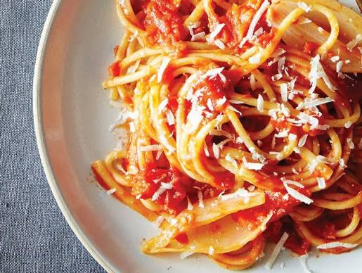
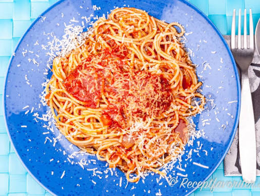
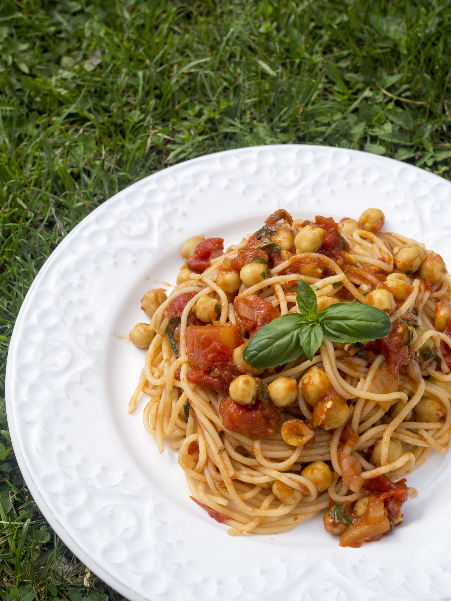
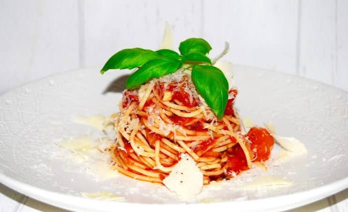

Pasta med tomatsås
Gör en smaskens tomatsås med italiensk pasta.
- 4 port
- 30 min
- Lätt
Ingredienser
För 4 portioner
Så här gör du
Serveringsförslag



 Jennys recept
Jennys recept start
Jennys recept
Jennys recept start

Gör en smaskens tomatsås med italiensk pasta.
För 4 portioner


